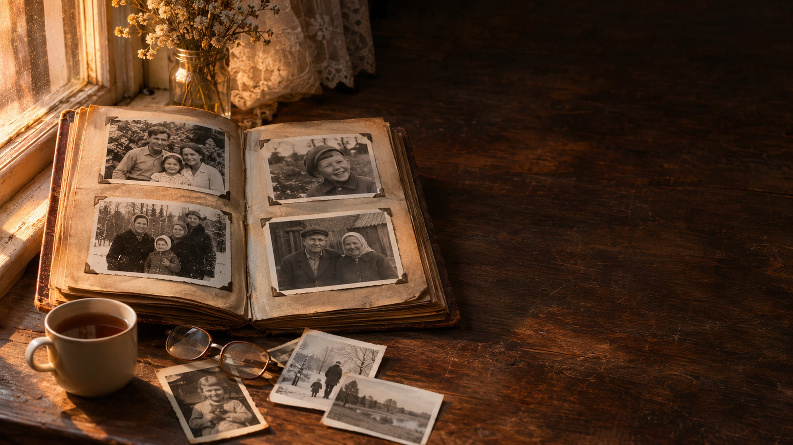
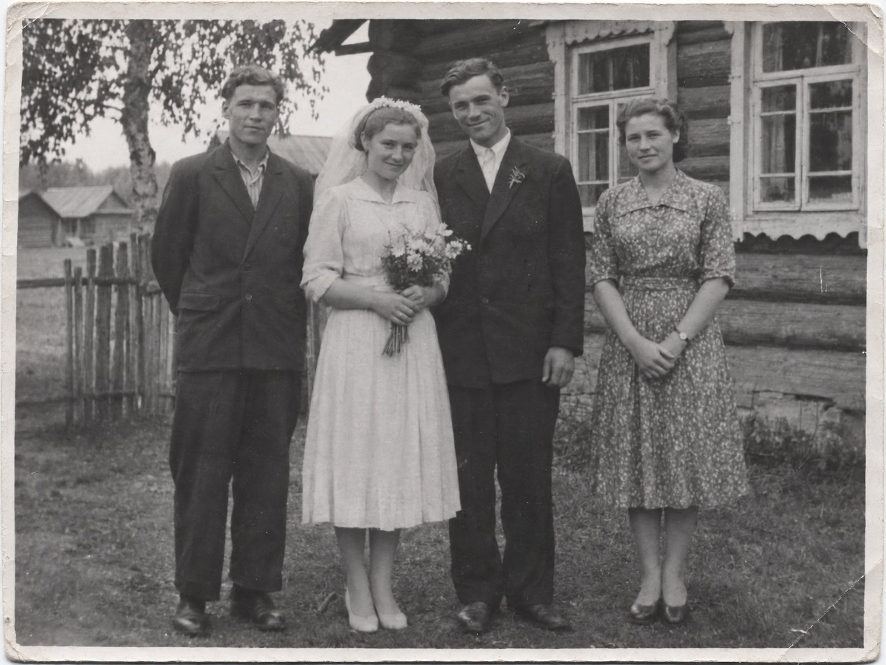
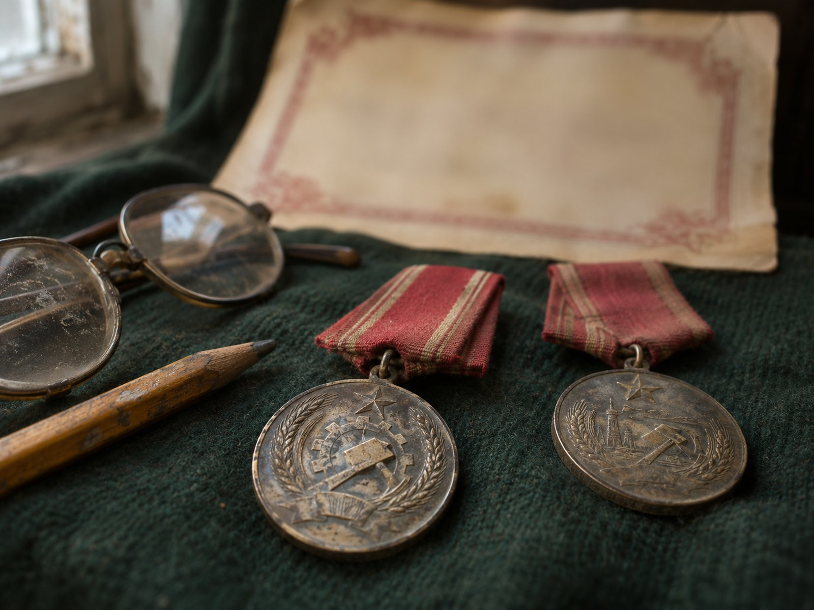
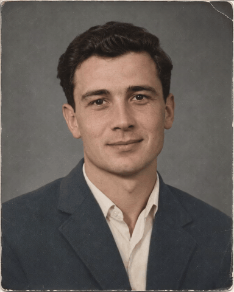
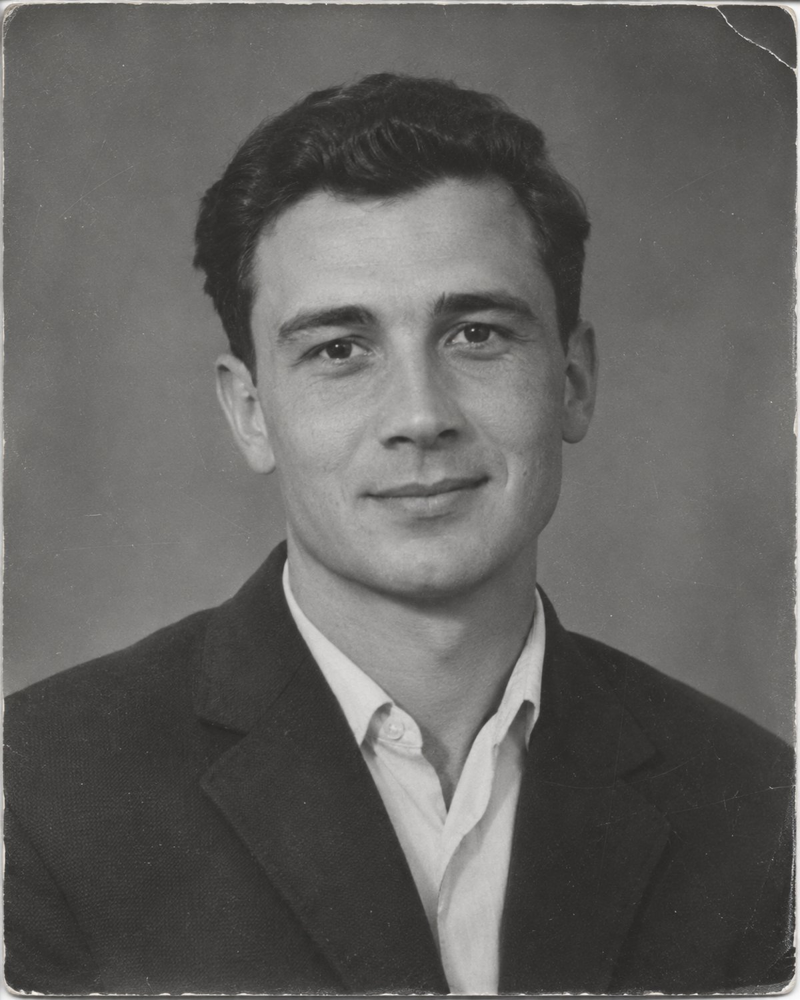

<meta charset="utf-8">
<title>Летопись - страницы памяти и семейное древо</title>
<meta name="description" content="Создаём страницу памяти о близком человеке: история жизни, восстановленные фотографии, голос, семейное древо и QR-код на памятник.">
<link rel="preconnect" href="https://fonts.googleapis.com">
<link rel="preconnect" href="https://fonts.gstatic.com" crossorigin>
<link href="https://fonts.googleapis.com/css2?family=Literata:ital,opsz,wght@0,7..72,300..700;1,7..72,300..600&display=swap" rel="stylesheet">
<link rel="stylesheet" href="styles.css">


<header class="top" id="top">
  <div class="wrap top__in">
    <a class="logo" href="#top">Летопись</a>
    <nav class="nav" aria-label="Разделы">
      <a href="#example">Пример</a>
      <a href="#tree">Древо</a>
      <a href="#qr">QR на памятник</a>
      <a href="#prices">Цены</a>
      <a href="#faq">Вопросы</a>
    </nav>
    <a class="btn btn--ghost top__cta" href="#request">Оставить заявку</a>
  </div>
</header>

<!-- 1. ПЕРВЫЙ ЭКРАН -->
<section class="hero">
  <div class="hero__media media" data-slot="ВИДЕО 16:9, 10-15 с, луп, без звука. Руки медленно листают старый семейный альбом, тёплый свет из окна, камера плавно едет. Справа тёмное место под текст. Постер: hero.jpg">
    
    <!-- <video autoplay muted loop playsinline poster="assets/img/hero.jpg"><source src="assets/video/hero.mp4" type="video/mp4"></video> -->
  </div>
  <div class="hero__shade"></div>
  <div class="wrap hero__in">
    <p class="eyebrow">Страницы памяти и семейные древа</p>
    <h1>Память, которую<br>можно открыть</h1>
    <p class="hero__lead">Мы собираем историю близкого человека в красивую страницу: главы жизни, восстановленные и раскрашенные фотографии, голос, награды и родные. QR-код на памятнике откроет её с любого телефона.</p>
    <div class="hero__actions">
      <a class="btn btn--light" href="#example">Посмотреть пример</a>
      <a class="btn btn--line-light" href="#prices">Цены от 3 990 ₽</a>
    </div>
    <ul class="hero__facts">
      <li><b>5-7 дней</b> от материалов до готовой страницы</li>
      <li><b>Пишем сами</b> по вашим голосовым и фото</li>
      <li><b>Копия у семьи</b> PDF-книга и архив навсегда</li>
    </ul>
  </div>
</section>

<!-- 2. ПРИМЕР СТРАНИЦЫ -->
<section class="sec" id="example">
  <div class="wrap">
    <div class="sec__head">
      <p class="eyebrow">Живой пример</p>
      <h2>Так выглядит страница памяти</h2>
      <p class="sec__lead">Это пример с вымышленным человеком. Пролистайте главы, зажгите свечу, перейдите к родным - так будут смотреть страницу ваши близкие.</p>
    </div>

    <article class="mem" aria-label="Пример страницы памяти">
      <div class="mem__bar"><span>letopis.ru/p/sokolov-nikolay</span><span class="mem__lock">Открыта для всех</span></div>

      <div class="mem__head">
        <div class="mem__portrait media" data-slot="ФОТО 4:5, главный портрет героя. Лучше оригинал после реставрации. Можно заменить на короткое оживление 3-4 с (луп, без звука)">
          
        </div>
        <div class="mem__title">
          <p class="mem__years">12 марта 1931 - 4 ноября 2019</p>
          <h3>Николай Петрович<br>Соколов</h3>
          <p class="mem__role">Инженер-мостостроитель, отец, дед и прадед</p>
          <blockquote class="mem__epitaph">«Мост строят не для себя. Его строят, чтобы другие дошли»</blockquote>
          <div class="mem__meta">
            <span>Прожил 88 лет</span><span>Ульяновская область</span><span>10 родных в древе</span>
          </div>
        </div>
      </div>

      <nav class="chapters" role="tablist" aria-label="Главы жизни">
        <button role="tab" class="is-on" data-ch="0"><b>1931</b>Детство</button>
        <button role="tab" data-ch="1"><b>1949</b>Учёба и Анна</button>
        <button role="tab" data-ch="2"><b>1957</b>Мосты</button>
        <button role="tab" data-ch="3"><b>1985</b>Дом и внуки</button>
        <button role="tab" data-ch="4"><b>Память</b>Награды</button>
      </nav>

      <div class="chapter-view">
        <div class="chapter is-on" data-ch="0">
          <div class="chapter__text">
            <h4>Детство в Тереньге</h4>
            <p>Николай родился в селе Тереньга третьим ребёнком в семье плотника. Отца он почти не запомнил: в 1941 году Пётр Алексеевич ушёл на фронт и не вернулся. Мать работала в колхозе с рассвета до темноты.</p>
            <p>В десять лет Коля уже чинил соседям табуретки отцовским рубанком. Этот рубанок он хранил всю жизнь и перед смертью отдал правнуку Мише со словами: «Руки помнят дольше, чем голова».</p>
          </div>
          <figure class="chapter__fig chapter__fig--quote">
            <p>«Каждую весну мы с братьями бегали на Волгу смотреть ледоход. Я тогда решил, что через такую реку обязательно должен быть мост».</p>
            <figcaption>Из рассказа Николая Петровича, записано внучкой Екатериной в 2016 году</figcaption>
          </figure>
        </div>
        <div class="chapter" data-ch="1">
          <div class="chapter__text">
            <h4>Учёба и Анна</h4>
            <p>В 1949 году Николай поступил в дорожный техникум в Ульяновске. Жил в общежитии, по ночам разгружал вагоны, а по субботам ходил на танцы в парк, где однажды пригласил на вальс студентку педучилища Анну.</p>
            <p>Анна потом смеялась, что танцевал он плохо, но так серьёзно, что отказать было невозможно. Свадьбу сыграли в 1956 году у дома её родителей, на ней гуляло полсела.</p>
          </div>
          <figure class="chapter__fig media" data-slot="ФОТО 4:3, архивное фото главы. Реставрируем и по желанию раскрашиваем">
            
            <figcaption>Свадьба Николая и Анны, 1956 год</figcaption>
          </figure>
        </div>
        <div class="chapter" data-ch="2">
          <div class="chapter__text">
            <h4>Мосты</h4>
            <p>Тридцать четыре года Николай Петрович проработал в мостостроительном отряде. Его бригада ставила мосты через Свиягу, Суру и Каму, а в 1967 году он впервые руководил монтажом пролёта над большой водой.</p>
            <p>Дома он почти не рассказывал о работе. Но когда семья ехала куда-нибудь на машине, на каждом мосту замедлялся и тихо говорил: «Этот держит».</p>
          </div>
          <figure class="chapter__fig media" data-slot="ФОТО 4:3 или ОЖИВЛЕНИЕ 4-6 с. Рабочее фото героя. Можно сделать движение воды и лёгкий наезд камеры">
            
            <figcaption>Бригада на монтаже пролёта, 1967 год. Николай Петрович в центре, с чертежом</figcaption>
          </figure>
        </div>
        <div class="chapter" data-ch="3">
          <div class="chapter__text">
            <h4>Дом и внуки</h4>
            <p>Все праздники собирались у Соколовых: Анна Ивановна пекла пироги с калиной, Николай Петрович строгал внукам деревянные кораблики и устраивал «испытания на прочность» в ванной.</p>
            <p>Внук Дмитрий стал инженером, как дед. Внучка Екатерина собрала эту страницу, чтобы правнук Миша знал, чей рубанок лежит у него на полке.</p>
          </div>
          <figure class="chapter__fig media" data-slot="ФОТО 4:3, семейное фото. Выцветшие цветные фото выравниваем по цвету">
            
            <figcaption>Новый год у Соколовых, 1985</figcaption>
          </figure>
        </div>
        <div class="chapter" data-ch="4">
          <div class="chapter__text">
            <h4>Награды и документы</h4>
            <p>Медаль «За трудовую доблесть» (1971), медаль «Ветеран труда» (1986), почётная грамота министерства за досрочную сдачу моста (1974).</p>
            <p>Мы фотографируем награды и документы так, чтобы их было приятно рассматривать, и подписываем, за что и когда они вручены.</p>
          </div>
          <figure class="chapter__fig media" data-slot="ФОТО 4:3, предметная съёмка наград и документов. Можно снять самим по нашей памятке или прислать нам">
            
            <figcaption>Медали и грамота хранятся у дочери Ольги</figcaption>
          </figure>
        </div>
      </div>

      <div class="mem__foot">
        <div class="words">
          <p class="words__label">Слова памяти</p>
          <blockquote>«Дед никогда не повышал голос. Он просто смотрел поверх очков, и всем становилось стыдно и смешно одновременно».<cite>Дмитрий, внук</cite></blockquote>
          <blockquote>«Папа научил меня, что сделанное на совесть переживёт любые слова».<cite>Ольга, дочь</cite></blockquote>
        </div>
        <div class="candle">
          <p class="words__label">Свеча памяти</p>
          <div class="candle__flame" aria-hidden="true"><span></span></div>
          <p class="candle__count"><b id="candleCount">214</b> свечей зажжено</p>
          <button class="btn btn--dark" id="candleBtn">Зажечь свечу</button>
        </div>
      </div>
      <div class="mem__links">
        <span>Родные на странице:</span>
        <button data-goto="anna">Анна Ивановна, жена</button>
        <button data-goto="petr">Пётр Алексеевич, отец</button>
        <button data-goto="olga">Ольга, дочь</button>
        <button data-goto="nikolay" class="mem__tree">Открыть всё древо</button>
      </div>
    </article>
  </div>
</section>

<!-- 3. КОЛОРИЗАЦИЯ -->
<section class="sec sec--paper2">
  <div class="wrap restore">
    <div class="restore__text">
      <p class="eyebrow">Реставрация и цвет</p>
      <h2>Возвращаем старым фотографиям лицо и цвет</h2>
      <p>Убираем трещины, пятна и заломы, восстанавливаем резкость лица. По желанию семьи раскрашиваем снимок, сверяясь с вашими подсказками: какого цвета был пиджак, глаза, платок.</p>
      <p>Оригинал всегда остаётся рядом с восстановленной версией. Проведите по фотографии, чтобы сравнить.</p>
      <ul class="ticks">
        <li>Реставрация трещин, пятен и заломов</li>
        <li>Раскрашивание по подсказкам семьи</li>
        <li>Оживление портрета на 3-5 секунд, только по вашей просьбе</li>
      </ul>
      <figure class="restore__animation media" id="photo-animation" data-slot="GIF 4:5, пример оживления демо-портрета на 3-4 секунды">
        
        <figcaption>Портрет Николая, 3,4&nbsp;с</figcaption>
      </figure>
    </div>
    <div class="compare media" id="compare" data-slot="ДВА ФОТО 4:5 одного кадра: оригинал ч/б (nikolay-bw.jpg) и после реставрации и цвета (nikolay-color.jpg). Композиция должна совпадать">
      
      <div class="compare__before"></div>
      <div class="compare__handle" aria-hidden="true"><span></span></div>
      <input type="range" min="0" max="100" value="50" aria-label="Сравнить до и после">
      <span class="compare__tag compare__tag--l">Оригинал, 1958</span>
      <span class="compare__tag compare__tag--r">После</span>
    </div>
  </div>
</section>

<!-- 4. ДРЕВО -->
<section class="sec sec--night" id="tree">
  <div class="wrap">
    <div class="sec__head sec__head--light">
      <p class="eyebrow">Семейное древо</p>
      <h2>Пять поколений на одной странице</h2>
      <p class="sec__lead">Нажмите на человека, чтобы прочитать о нём и перейти к его родным. Древо растёт вместе с семьёй: дети и внуки смогут добавить себя позже. Его можно открыть всем или закрыть паролем.</p>
    </div>
    <div class="tree">
      <div class="tree__canvas" id="treeCanvas">
        <svg class="tree__lines" id="treeLines" aria-hidden="true"></svg>
      </div>
      <aside class="tree__card" id="treeCard" aria-live="polite"></aside>
    </div>
    <div class="tree__legend">
      <span><i class="lg lg--page"></i>Есть страница памяти</span>
      <span><i class="lg lg--live"></i>Живые родственники</span>
      <span class="tree__privacy">Доступ: <button class="pill is-on" data-priv="open">Для всех</button><button class="pill" data-priv="family">Только семья</button></span>
    </div>
  </div>
</section>

<!-- 5. ГОЛОС И ВИДЕО -->
<section class="sec">
  <div class="wrap voice">
    <div class="sec__head">
      <p class="eyebrow">Голос и видео</p>
      <h2>Голос, который хочется услышать снова</h2>
      <p class="sec__lead">Старые голосовые, записи с кассет и семейное видео мы чистим от шума и ставим рядом с историей. Из фотографий собираем короткий фильм-воспоминание на минуту.</p>
    </div>
    <div class="voice__grid">
      <div class="player" data-slot="АУДИО mp3/m4a, 20-60 с: голосовое или запись голоса героя. Чистим шум, подписываем дату">
        <p class="player__title">«Про первый мост»</p>
        <p class="player__sub">Голосовое Николая Петровича, 2016 год, 0:42</p>
        <canvas class="player__wave" id="wave" height="64"></canvas>
        <div class="player__row">
          <button class="btn btn--dark player__btn" id="playBtn">Слушать</button>
          <span class="player__time" id="playTime">0:00 / 0:42</span>
        </div>
        <p class="player__note">В макете звук не подключён: сюда ставится файл записи.</p>
      </div>
      <div class="film media" data-slot="ВИДЕО 16:9, 45-60 с, со звуком (музыка). Фильм-воспоминание из фото: оживления, наезды, титры с годами. Постер: family-1985.jpg">
        
        <div class="film__over">
          <span class="film__play">Смотреть фильм</span>
          <span class="film__len">Фильм-воспоминание, 1:00</span>
        </div>
      </div>
    </div>
  </div>
</section>

<!-- 6. QR И МЕСТО -->
<section class="sec sec--paper2" id="qr">
  <div class="wrap qr">
    <div class="qr__photo media" data-slot="ФОТО 4:3 или ВИДЕО 6-8 с: табличка с QR на граните, рука с телефоном наводит камеру, открывается страница">
      
    </div>
    <div class="qr__text">
      <p class="eyebrow">QR-код на памятник</p>
      <h2>Наведите камеру - и история рядом</h2>
      <p>Мы даём файл QR-кода для печати на металлической или керамической табличке. Его делает любая мастерская или наш партнёр. Ссылка постоянная, менять табличку не придётся.</p>
      <div class="qr__row">
        <div class="qr__code"><canvas id="qrCanvas" width="148" height="148" aria-label="QR-код примера"></canvas><span>Наведите камеру</span></div>
        <dl class="place">
          <div><dt>Место захоронения</dt><dd>Кладбище Северное, Ульяновск</dd></div>
          <div><dt>Участок / ряд / место</dt><dd>14 / 6 / 22</dd></div>
          <div><dt>Координаты</dt><dd>54.3712, 48.5521</dd></div>
          <div><a class="btn btn--dark" href="#qr" onclick="return false">Построить маршрут</a></div>
        </dl>
      </div>
    </div>
  </div>
</section>

<!-- 7. ЧТО ПОЛУЧАЕТ СЕМЬЯ -->
<section class="sec">
  <div class="wrap">
    <div class="sec__head">
      <p class="eyebrow">Что вы получаете</p>
      <h2>Память, которая останется у семьи</h2>
    </div>
    <ol class="gets">
      <li><b>Страница по постоянному адресу</b><span>Открывается с любого телефона без приложений и регистрации. Открыта для всех или по паролю.</span></li>
      <li><b>QR-код для таблички</b><span>Векторный файл для печати на памятник, открытку или в семейный альбом.</span></li>
      <li><b>PDF-книга</b><span>Та же история, свёрстанная для печати. Можно распечатать в любой типографии.</span></li>
      <li><b>Архив страницы</b><span>Автономная копия со всеми фото и голосом: сохраните на компьютер или флешку. Откроется даже без интернета и без нас.</span></li>
    </ol>
  </div>
</section>

<!-- 8. ЦЕНЫ -->
<section class="sec sec--paper2" id="prices">
  <div class="wrap">
    <div class="sec__head">
      <p class="eyebrow">Цены</p>
      <h2>Три формата под разную историю</h2>
      <p class="sec__lead">Размещение на 3 года уже включено. Дальше 390 ₽ в год, а копия страницы в любом случае остаётся у вас.</p>
    </div>
    <div class="plans">
      <div class="plan">
        <h3>Страница памяти</h3>
        <p class="plan__price">3 990 ₽</p>
        <p class="plan__for">Когда хочется сохранить главное</p>
        <ul>
          <li>Один человек, до 15 фото</li>
          <li>Текст до 3 000 знаков по вашим фактам</li>
          <li>Реставрация и цвет 3 фото</li>
          <li>QR-код и PDF</li>
          <li>Готово за 3-5 дней</li>
        </ul>
        <a class="btn btn--line" href="#request" data-plan="Страница памяти">Выбрать</a>
      </div>
      <div class="plan plan--main">
        <p class="plan__badge">Основной формат</p>
        <h3>История жизни</h3>
        <p class="plan__price">7 900 ₽</p>
        <p class="plan__for">Подробная история по главам</p>
        <ul>
          <li>Пишем по вашим голосовым или звонку, до 8 000 знаков</li>
          <li>До 40 фото, 10 реставраций с цветом</li>
          <li>Голос, видео, награды и документы</li>
          <li>Место захоронения на карте</li>
          <li>QR, PDF-книга и HTML-архив</li>
          <li>Два круга правок, 5-7 дней</li>
        </ul>
        <a class="btn btn--dark" href="#request" data-plan="История жизни">Выбрать</a>
      </div>
      <div class="plan">
        <h3>Семейное древо</h3>
        <p class="plan__price">от 14 900 ₽</p>
        <p class="plan__for">История рода на несколько поколений</p>
        <ul>
          <li>До 12 человек с карточками</li>
          <li>Интерактивное древо и переходы между родными</li>
          <li>Одна подробная история жизни</li>
          <li>Доступ для всех или по паролю</li>
          <li>Родные добавляют себя позже</li>
        </ul>
        <a class="btn btn--line" href="#request" data-plan="Семейное древо">Выбрать</a>
      </div>
    </div>
    <p class="plans__extra">Дополнительно: фильм-воспоминание на минуту от 4 900 ₽, металлическая QR-табличка от 1 500 ₽, ещё один человек в древо 900 ₽.</p>
  </div>
</section>

<!-- 9. КАК РАБОТАЕМ -->
<section class="sec">
  <div class="wrap">
    <div class="sec__head">
      <p class="eyebrow">Как мы работаем</p>
      <h2>От вас - воспоминания, от нас - всё остальное</h2>
    </div>
    <ol class="steps">
      <li><span>01</span><b>Заявка</b><p>Пишете нам, о ком хотите рассказать. Подсказываем, что собрать, и называем точную цену.</p></li>
      <li><span>02</span><b>Материалы</b><p>Присылаете фото, сканы документов и голосовые: как вспоминается, без подготовки. Можно созвониться.</p></li>
      <li><span>03</span><b>Черновик</b><p>Через 5 дней показываем закрытую страницу. Вы читаете, правите факты и слова.</p></li>
      <li><span>04</span><b>Готово</b><p>Открываем страницу, отдаём QR, PDF-книгу и архив. Дальше её можно дополнять.</p></li>
    </ol>
  </div>
</section>

<!-- 10. ВОПРОСЫ -->
<section class="sec sec--paper2" id="faq">
  <div class="wrap faq">
    <div class="sec__head">
      <p class="eyebrow">Вопросы</p>
      <h2>Что обычно спрашивают</h2>
    </div>
    <div class="faq__list">
      <details open><summary>У нас мало фотографий и почти ничего не записано</summary><p>Этого достаточно. Мы задаём вопросы по памятке, а вы отвечаете голосовыми, как получится. Даже из одного фото и получаса воспоминаний складывается тёплая страница.</p></details>
      <details><summary>Кто увидит страницу?</summary><p>Решаете вы. Страница может быть открытой или закрытой паролем, который вы передаёте только родным. Поисковики закрытую страницу не видят.</p></details>
      <details><summary>Что будет, если ваш сервис закроется?</summary><p>У вас остаются PDF-книга и автономный архив страницы со всеми фото и записями. Они открываются на любом компьютере без интернета.</p></details>
      <details><summary>Можно ли дополнить страницу потом?</summary><p>Да. Новые фото, воспоминания родных и людей в древо добавляем в любое время, мелкие правки бесплатно в первый месяц.</p></details>
      <details><summary>Вы оживляете фотографии с помощью ИИ?</summary><p>Только если семья сама этого хочет. Реставрация и цвет делаются бережно, рядом всегда остаётся оригинал.</p></details>
    </div>
  </div>
</section>

<!-- 11. ЗАЯВКА -->
<section class="sec sec--night" id="request">
  <div class="wrap request">
    <div>
      <p class="eyebrow">Заявка</p>
      <h2>Расскажите, о ком хотите сохранить память</h2>
      <p class="sec__lead">Ответим в течение дня, подскажем, что собрать, и назовём точную цену. Ни к чему не обязывает.</p>
      <p class="request__alt">Или напишите напрямую: Telegram, WhatsApp, телефон <span class="todo">(контакты добавим)</span></p>
    </div>
    <form class="form" id="form">
      <label>Как к вам обращаться<input name="name" required placeholder="Екатерина"></label>
      <label>Телефон или Telegram<input name="contact" required placeholder="+7 ... или @ник"></label>
      <label>Формат
        <select name="plan" id="planSelect">
          <option>Пока не знаю</option><option>Страница памяти</option><option>История жизни</option><option>Семейное древо</option>
        </select>
      </label>
      <label>Пара слов о человеке<textarea name="about" rows="3" placeholder="Например: дедушка, строил мосты, есть 20 фото и голосовые"></textarea></label>
      <button class="btn btn--light" type="submit">Отправить заявку</button>
      <p class="form__note" id="formNote">Нажимая кнопку, вы соглашаетесь с политикой обработки персональных данных.</p>
    </form>
  </div>
</section>

<footer class="foot">
  <div class="wrap foot__in">
    <span class="logo">Летопись</span>
    <span>Страницы памяти и семейные древа</span>
    <span>Политика конфиденциальности · Оферта</span>
  </div>
</footer>

<button class="slots-toggle" id="slotsToggle" type="button">Слоты медиа</button>

<script src="https://cdn.jsdelivr.net/npm/qrcode-generator@1.4.4/qrcode.min.js"></script>
<script src="app.js"></script>
